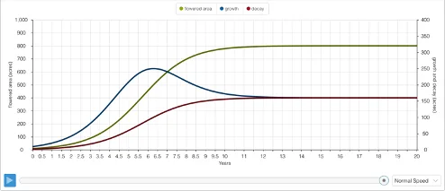
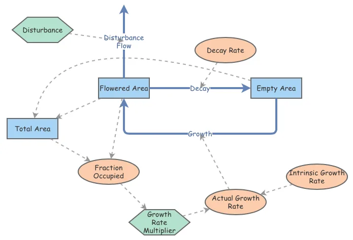
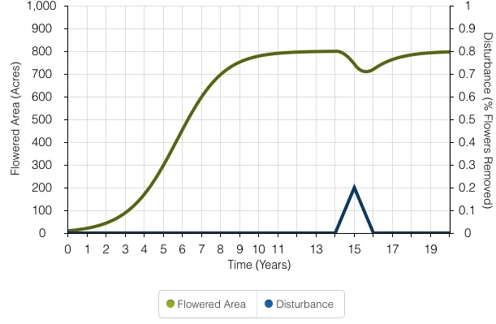

UCLA coursework, 2014 to 2020
S-Shaped Growth: Modeling the Natural System of a Flowered Area
Flower Model - Intrinsic Growth vs. Actual Growth Rate
This model explores one of the six types of dynamic patterns: S-Shaped Growth graphing. S-Shaped graphs are crucial for describing patterns in natural systems. This project simulates the spread of flowers across a 1,000-acre landscape.

There are two stocks in the model above: "Flowered Area" and "Empty Area." The initial value for the "Flowered Area" is 10 acres; the "Empty Area" is 990 acres. With 10 acres purely of flowers, there will be minimal limitations hindering their spread - the seeds will have open space to grow in all directions. The variable "Decay Rate" is set to 20% per year and is the product of the "Flowered Area" and rate of decay. The growth of the "Flowered Area" is dictated by the "Growth Rate" variable (a product of the Growth Rate and Flowered Area).
If the model above only took the stated variables for simulation, the flowered area would expand by 80% per year. With no resource limitations, the model would assume an Intrinsic Growth Rate. To develop a more realistic model of the natural spread of flowers, an "Actual Growth Rate" variable will be introduced to the simulation. The "Actual Growth Rate" will be less than the Intrinsic Growth Rate of our first scenario - as the flowers spread across the landscape, the amount of "Empty Area" available will decrease and the flowers' possibility to germinate will be increasingly harder.

The graph above illustrates a remarkably quick spread of the "Flowered Area" within the first 10 years, but a dynamic equilibrium at 800 acres - not the full 1,000 acres available in the landscape. The "Flowered Area" starts with 10 acres, and within 6 years is covering 50 times its original breadth at a whopping 500 acres. This 6th year on the graph indicates the highest rate of growth in the "Flowered Area" as the growth exceeds the decay by the biggest margin. After this, the increasing trends starts to stabilize and eventually tapers off - an inverse of the first 6 years with a new decline in growth and increase in decay. Dynamic Equilibrium is met around the 12th year, 4/5th of the landscape completely covered in flowers. The flowers will never cover the entire landscape, because the "Decay Rate" is fixed at 20% throughout the simulation.
Introducing a Disturbance - The Implications of Equilibrium


This model allows for a disturbance to remove 20% of the flowers. The "Disturbance" Converter is linked with a newly added "Disturbance Flow" that will enact on the 15th year of the simulation. The "Total Area" internal variable has been changed to a Stock in the model. The model was set for a duration of 20 years to indicate if equilibrium would be reached, but the added "Disturbance" only reduced the "Flowered Area" for the year it was enacted. The flowers gradually reached back to their apex of 800 acres 5 years after the "Disturbance" occurred.